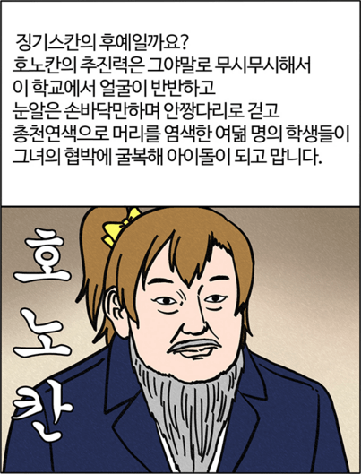

- 부기영화
- 선천적 얼간이들
- 질풍기획
부기영화
- 1. 개요
- 2. 특징
- 2.1. 개그 만화로서
- 2.2. 영화 리뷰로서
- 2.3. 영화 평론으로서
- 3. 등장인물
- 4. 단점
- 5. 패턴화된 내용, 표현
- 6. 리뷰 목록
- 7. 패러디
- 8. 어록
- 9. 기타
- 급소가격
- 여빛
진지하고 학술적이며 온 가족이 함께 볼 수 있는 건전함을 지향하는 만화
어원은 아마 부귀영화(富貴榮華)이거나 부기(附記)에서 따온 것으로 보였다만, 155화에서의 인터뷰에 따르면 어원은 작가도 모르고, 연재 시작 전부터 지어져 있었다고 한다.
글 작가는 급소가격이고 그림 작가는 여빛이다.
